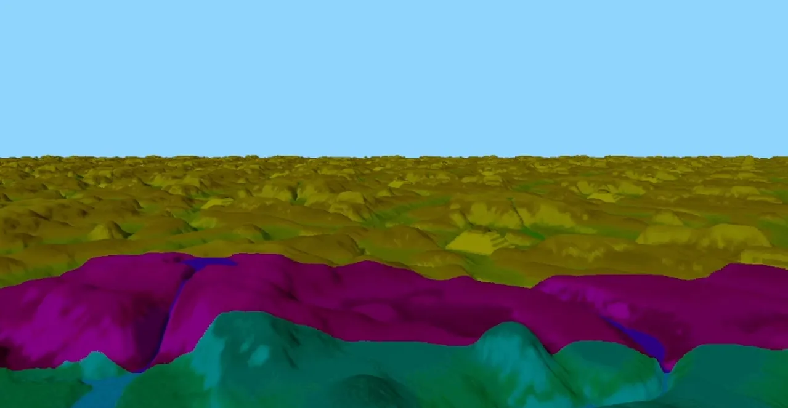
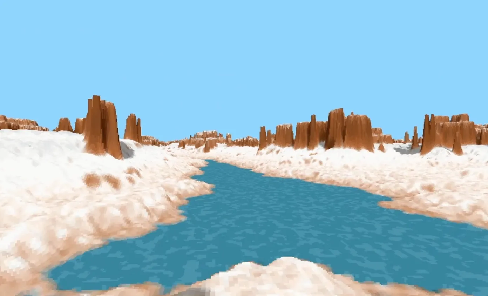

A real-time voxel terrain renderer written in C using the Voxel Space technique as part of a University Assignment.
The goal was to see how far we could optimize the code. Benchmarking after every change to validate everything.
The Voxel space technique works by casting one ray per screen column, marching it through depth and projecting it to a texture with a heightmap and a colour map. We then travel across that ray inside the texture, check and paint it accordingly keeping in mind the heights painted before in that column.
The optimization process started by reusing operations that can be reused, minimizing divisions or other costly operations like sine, and using bit shifts and bitmasks to replace the modulo operations. After that we went for more algorithm specific optimizations like mipmaps with LODs. We also went with some more extreme optimizations like horizontal rendering and tiled transpose with loop unrolling for better cache use, plus joining the height and colour texture into one. We even converted every float in the inner loop to int and used fixed point arithmetic because multiplying integers is faster than floats. After optimizing the inner loop of the algorithm to its core we tried rewriting it in ARM64 to see if we could beat the compiler.
Personally, we are very proud of this project. For this assignment we had the freedom to choose between multiple graphical effects to recreate and optimize, and this effect was rated as the hardest one by far, recommended only for those who wanted a challenge. We not only completed it with a Distinction, but also received praise from our teacher.
Highlights
- Real-time voxel terrain renderer with heightmap, camera navigation and a three-tier LOD system.
- Core terrain algorithm rewritten in ARM64 Assembly to improve performance.
- Optimizations including lookup tables, loop unrolling, fixed-point arithmetic and cache-aware memory access.
- Profiled and benchmarked every implementation to validate each optimization.
Tools
- Git
- Linux
Languages
- C
- ARM64 Assembly

